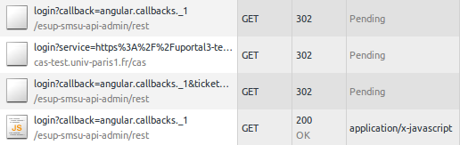

Web Widgets !
avec WS, CAS, JSONP
Pascal.Rigaux @ univ-paris1.fr
Réutilisation de code
Les classiques :
- bibliothèques de code
- frameworks
- web services
- jquery widgets
Combinaison intéressante :
Web Widgets s'appuyant sur des web-services
Exemple : chercher une personne

|
Idée : transformer un bête <input> en autocomplétion
Utilisé à Paris1 :
|
Exemple : chercher une personne
Web Service
|
Javascriptjquery-ui autocomplete |
Exemple : bandeau-ENT
Idée :
- alternative à l'intégration iframe,
- l'application intègre le web widget "bandeau-ENT"
Facile à intégrer :
<script>
window.bandeau_ENT = { current: "nuxeo" };
</script>
<script src="https://bandeau-ENT.univ-paris1.fr/bandeau-ENT-loader.js"></script>
bandeau-ENT : comparaison uportal
Avantages
|
Inconvénients
|
bandeau-ENT : technologie
- JSONP avec auth CAS + authorisation sur attrs LDAP
ou JSONP avec auth shib avec proxy dans l'application - cache dans localStorage pour fonctionner sans cookie
XHR, CORS, JSONP
| GET | POST | DELETE, PUT |
Cross domain | Cookies | Error handling | HTTP header | |
|---|---|---|---|---|---|---|---|
| XHR | X | X | X | X | X | X | |
| CORS | X | X | X | controlé | limité | X | X |
| JSONP | X | X | X | partiel | |||
| <form> + hidden iframe | oui, aveugle |
oui, aveugle |
X | X | ? |
XHR, CORS, JSONP
Précisions
CORS- bien répandu (IE >= 8)
- limité : impossible d'avoir cookies + redirect
JSONP
- possibilité de contrôler partiellement le cross-domain en vérifiant le referer
<form> + hidden iframe
- impossible de lire le résultat des requêtes GET/POST
JSONP vs Ajax
REST/JSON
Requête Ajax http://foo.fr/bar qui renvoie
{ "Name": "Foo", "Id": 1234 }
JSONP
Balise script src=http://foo.fr/bar?callback=f qui renvoie
f({ "Name": "Foo", "Id": 1234 })
echo $data
echo $_GET['callback'] . '(' . $data . ');';
JSONP
Avec un web-service compatible JSONP, on peut l'utiliser de la même manière que XHR tout en étant cross-domain.⚠ Autoriser JSONP ouvre le web-service à des vols de données par XSS.
⚠ Pour éviter les attaques CSRF, le web-service doit respecter la norme HTTP : GET ne doit pas faire d'effet de bord.
Safari refuse les cookies des sites non visités. Cela concerne uniquement les sites externes. Si besoin, le web-service peut contourner le problème en utilisant sessionStorage.
JSONP & CAS
Si cookie CAS dans le navigateur,possibilité d'autolog requête JSONP :  NB : CAS gateway est recommandée pour la gestion d'erreur
Web-service cross-domain sécurisé
- pour /login : utiliser JSONP / window.open+postMessage
- pour les autres urls: utiliser CORS pour limiter les sites utilisateurs du web-widget
- respecter la norme HTTP : GET ne doit pas faire d'effet de bord.
- protéger POST avec un token passé en header HTTP : si le token manque, le WS renvoie un nouveau token, il suffit de rejouer la requête.